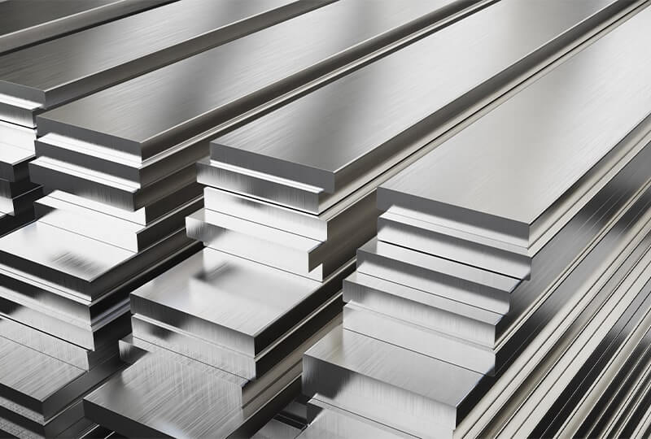
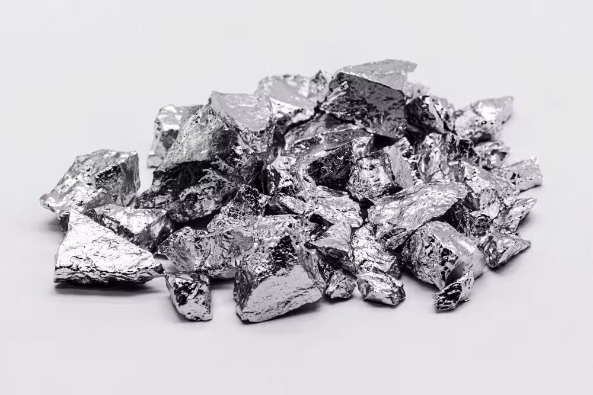
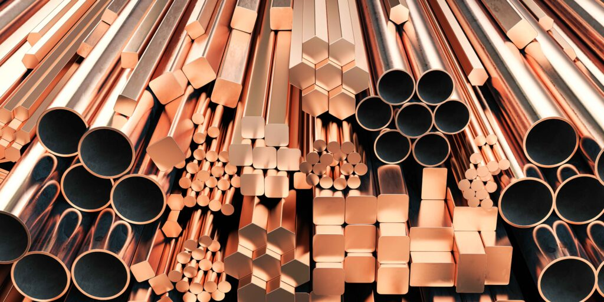
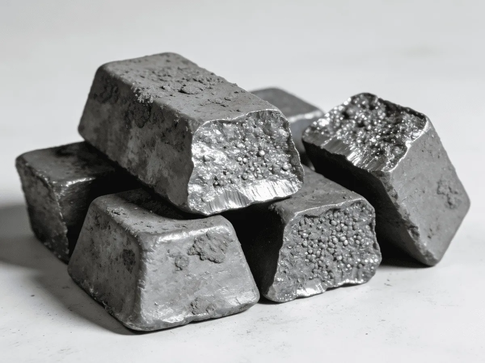
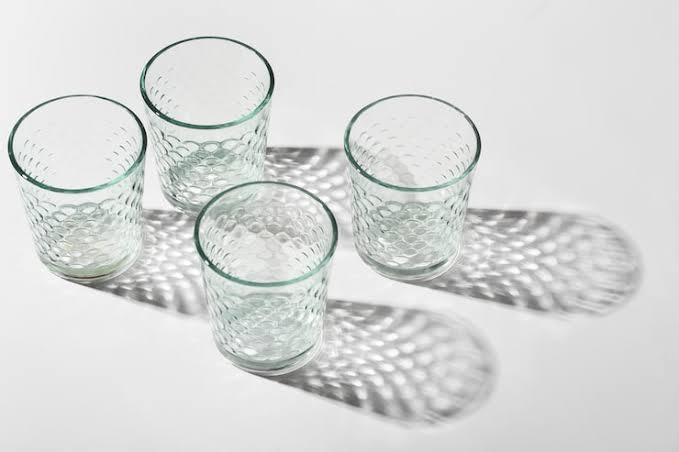
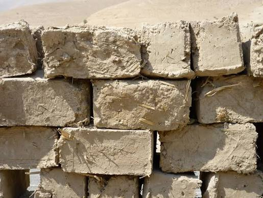
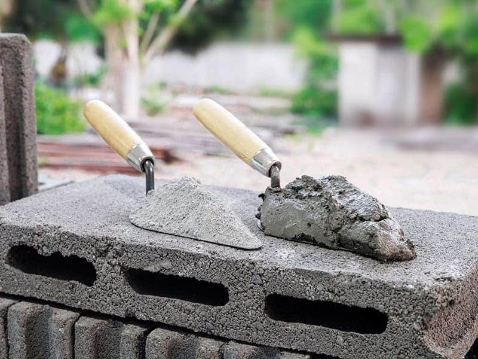
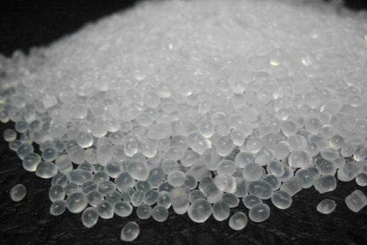
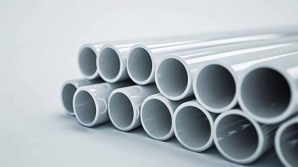

Here are examples of traditional materials, what they're used for and how they can help us.
An alloy with a base metal melted down with one or more elements

It is a very strong material. Used for structural bridging and reinforcing bars, however can rust overtime.

Lightweight material, used for aircraft body parts, window frames and electronic devices, resistant to corrosion.

Conductive material, used for wiring and plumbing.

Heavy and fragile, used for engine blocks, heavy machinery and piping.
Solids and non metals.

Clear, used for windows and bottles, has a fixed amount of light transmission. Unlike photochromic, it can't change its tint or heat transfer. it's different from photochromic.

Heat resistant , it's hard and used for constructing walls. Can become cracked under high amounts of thermal shock and physical impacts.

Made up of gravel and sand mixed with water and cement. very strong under compression. Can become cracked and overtime allow moisture through unlike bio cement.
Metals which can remember their shape, change size when heated or electricity is passed through.

Common plastic material. Used for bottles, packaging and piping. Keeps it shape but it will degrade over a long period of time in the sun

Very stiff material, Can also be flexibile. Used for plumbing, window frames and cable insulation.
Used specifically for tires but can also be used for sealing. It is an elastic material however common rubber can't change its shape, it is a very stiff material.